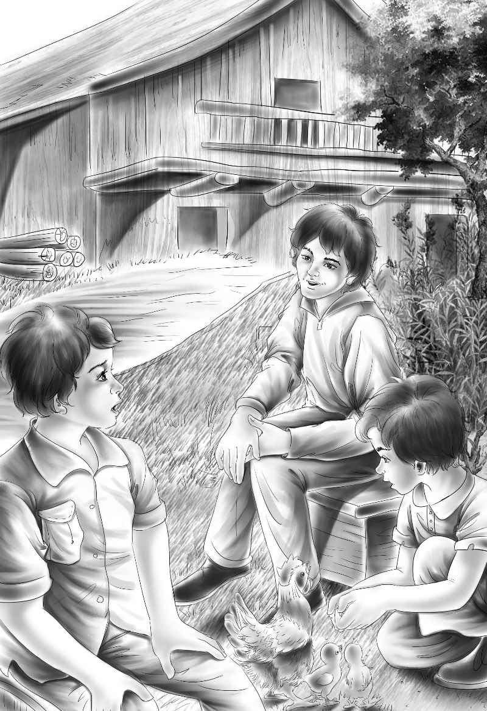

A Big Present
第二天早上，山姆来送牛奶时，惊讶地发现四个孩子都坐在后门的台阶上，正等候着他。
“嗨，早起的小鸟儿们，起这么早干吗？”他问道。
“我们想见你了！”亨利说。
“我这不是来了嘛，可是我有什么好看的？”山姆笑道。
“好看，山姆，我觉得你顶好看呢！”班尼说，“而且我们有话想跟你讲。”
“等我喂完鸡再坐下来跟你们聊。”
孩子们跟着山姆来到鸡舍，看着他干活。
“我们想看看你是怎么工作的，”杰西说，“教教我们吧！”
山姆开心地教他们怎么喂鸡，怎么给鸡饮水，怎么拾鸡蛋。
过了一会儿，他们在马厩大门口的箱子上坐了下来。
亨利说：“简姑婆说她要把这个农场送给我们。”
“把农场给你们？”山姆喊道，他实在不敢相信自己的耳朵，“你们太小了，根本没法管理农场啊！”
“庞德先生说了，只要你给我们当经理，就没问题。”班尼说。
“庞德先生？”山姆问，“他来过了吗？”
“没有，但是他给简姑婆写信了，”亨利说，“姑婆说，庞德先生很精通这些事。”

“他当然精通，可我还是没法相信。”
山姆摇了摇头，继续说：“农场给谁都没什么关系，我倒乐意有机会修理修理这个老农场！如果有钱的话，我可以帮你们把鸡蛋生意做大。”
山姆顿了顿，又摇了摇头：“可我还是没法相信这一切是真的。”
“山姆，你一定要相信呢！”亨利说，“简姑婆说了，这个农场现在就是我们的了，她只需要在文件上签字就行了。”
山姆摘了片草叶子，放到嘴里嚼了嚼，这个奇怪的消息让他有点不安。
“除了卖鸡蛋以外，你还有什么打算？”杰西问道。
“哦，我还打算种小麦。这个农场里的500公顷地都能种小麦。”
“农场有多大？”亨利问。
“从这里一直到山上，所有的地都是你们姑婆的。”
“我们来看简姑婆的时候，压根没想到会发生这样的事。”杰西说。
孩子们和山姆坐在地上，眺望着农场。不久以后，这里的一切都将属于他们。
“还有一件怪事儿！”山姆说，“我见到了你们说的那个神秘人！”
“哦，他在哪儿？”杰西问。
“还在镇上，但是谁也不知道他为什么来这儿。我们赛特维尔镇从没来过什么陌生人，大家都在猜他来这里的目的。”
“你们赛特维尔镇没有警察吗？”亨利问，“我觉得应该留意一下他。”
“不，亨利，”杰西赶紧说，“你要是见过他，就不会这么想了。”
“镇子上从来没有警察，”山姆说，“这儿不需要警察。不过在附近的石溪镇倒是有个巡警，叫贝茨。”
“快看，那是什么？”班尼大喊，“是辆汽车！”
“是庞德先生，我敢肯定！”山姆说，“看来你们说的事儿是真的。”
“庞德先生起得真早！”杰西笑着说，“我们还没吃早饭呢！”
望望站了起来，静静地看着陌生人，轻轻摇了摇尾巴。
“山姆，早上好！”庞德先生打了声招呼，慢慢朝马厩走来。
望望并没有叫，而是慢慢迎向陌生人，尾巴摇得更厉害了。
“你好！你叫什么名字？”庞德先生问望望，“你乖吗？”
班尼说：“它叫望望，很乖的，只有见到陌生人时它才会叫。”
“可你没冲我叫啊，乖狗狗。”庞德先生说着拍了拍望望，又笑着看了看孩子们。
“是你们的姑婆请我过来的，”他说，“我们进屋把事情办了吧！山姆，你也进来。这事简小姐已经决定了，她不喜欢耽搁。”
亨利说：“庞德先生，您能不能等一会儿？见简姑婆之前，我们想跟您谈谈。”
庞德先生问道：“你就是亨利吧？”
“是的，我就是亨利。我们很乐意拥有农场，但这是简姑婆仅有的财产，我们不想拿走。您明白我的意思吗？”
“这好办，”庞德先生点了点头，“我能轻松解决。我可以在文件里加上一条，就说你们从农场获得的钱将用于给你们的姑婆养老。是这个意思吗？”
“这么写会让我们更心安一些，”杰西说，“虽说我们本来就准备照顾姑婆一辈子，但写在文件里会更好。”
他们来到房子门口，麦琪正在那里等着他们。
“庞德先生，见到您真高兴呐！”她打了个招呼，“简一旦决定做什么事，一刻也不能等。她一直在问，您怎么还没到。”
“不会再等多久了，”庞德先生和蔼地笑道，“文件都带来了，我再按照亨利的要求加上一条。”
正如庞德先生所说，没费多少工夫——简姑婆先签了字，接着是四个孩子，最后山姆和庞德先生也签了字。
十分钟之后，农场就变成奥登家四个孩子的了，山姆·威克斯则变成了经理。
“真有意思！”班尼说，“咱们只是签了个字而已，能顶什么用呢？”
庞德先生笑着说：“这意味着，你们几个孩子拥有了1280公顷的土地，以及一座庄园。”
“还有一间被人住过的小茅屋。”班尼说。
“什么？怎么回事？”简姑婆惊讶地问道，“我竟然不知道我的土地上还有小茅屋。”
“我们本来不想让您担心，”亨利说，“但我们确实在树林里发现了一间小茅屋，而且似乎还有人在那里生过火。”
“可是我们没见到住客。”杰西说。
庞德先生的脸变得严肃起来，随即他又笑了笑：“我觉得应该没事，你们吃早饭吧，让我跟山姆谈谈。”
两个大人出去了。杰西吃着早餐，看见他们俩站在汽车边谈了好久。如果她能听到他俩谈话的内容，肯定会很吃惊，也会很激动，因为他俩根本没在谈农场的事情，而是在谈列车上的神秘人，还有树林中的小茅屋。
杰西做好了早餐，用托盘端到姑婆的房间里。这天早上，杰西并没有刻意劝姑婆吃饭，只是把早餐盘子放到她面前。姑婆吃了火腿、面包和鸡蛋，一句坏脾气的话都没有讲。
“简姑婆，”杰西说，“您把农场交给我们，一定不会后悔的。我们喜欢这个农场，会好好打理它；我们也会爱您，照顾您一辈子的——就算是回家以后也会。”
简姑婆叹了口气，要知道之前谁都不愿意照看她。她看上去开心极了。
“现在我感觉踏实了，”姑婆说，“我就知道农场会由真正喜欢它的人来守护。”